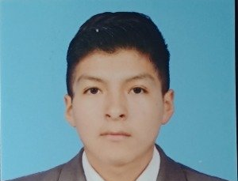
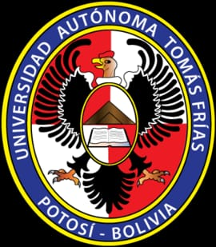

CARRERA
Ingeniería de Sistemas
NOMBRE
Jhasmani Calizaya Condori

VISIÓN 2030


MIS DEPORTES FABORITOS. Son: futbol y futsal, que mas me gusta y que es el deporte mas lindo. MIS COMIDAS FABORITAS. Son: la minalesa, aji de fideo y picante de pollo, es lo que mas me gusta.
MI FUTURO: Dentro de 5 años me visualizo como un ingeniero de sistemas Software, altamente capacitado y trabajando en una de las grandes empresas tecnológicas a nivel internacional. Habré alcanzado un puesto destacado como Desarrollador de programacion o Arquitecto de Software en compañías como Google, Microsoft, Amazon, Meta o una importante empresa de tecnología en Latinoamérica.
Habré logrado estabilidad financiera, viviré con comodidad y seguiré formándome constantemente para avanzar hacia posiciones de mayor responsabilidad. Esta experiencia en una gran empresa me brindará el conocimiento, los contactos y la confianza necesarios para, más adelante, emprender mis propios proyectos.
Mi futuro que estoy construyendo con disciplina y esfuerzo diario llega a cada paso y a la realidad de conseguir todo
lo que me propongo en hacer una empresa de videojuegos con los equipos tecnologicos de programación, hacer crecer esa
empresa que tengo en mente y hacerlo realidad.
¡En 5 años me veo como un profesional exitoso y listo!

Alcanzar un puesto de liderazgo en una empresa tecnológica de renombre, aplicando conocimientos avanzados en sistemas.
Contribuir con soluciones tecnológicas que generen un impacto positivo significativo en la sociedad o en la industria.